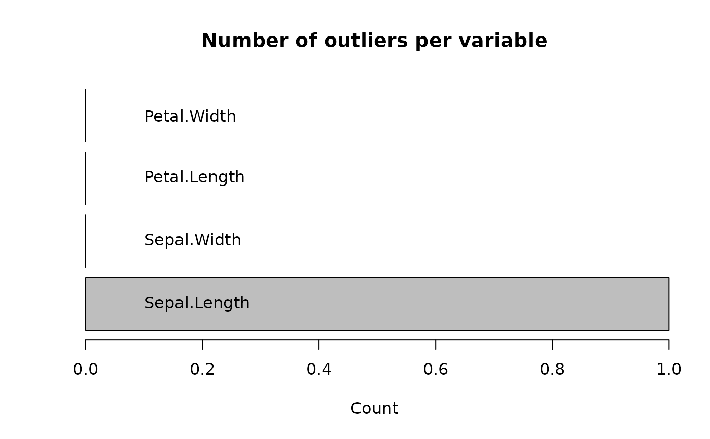

Identifies outliers in new data based on previously fitted "outForest" object.
The result of predict() is again an object of class "outForest".
All its methods can be applied to it.
An object of class "outForest".
A new data.frame to be assessed for numeric outliers.
Should outliers be replaced via predictive mean matching "pmm"
(default), by "predictions", or by NA ("NA").
Use "no" to keep outliers as they are.
For replace = "pmm", from how many nearest OOB prediction neighbours
(from the original non-outliers) to sample?
Threshold above which an outlier score is considered an outlier. The default is 3.
Maximal number of outliers to identify.
Will be used in combination with threshold and max_prop_outliers.
Maximal relative count of outliers.
Will be used in combination with threshold and max_n_outliers.
Integer random seed.
Further arguments passed from other methods.
An object of class "outForest".
(out <- outForest(iris, allow_predictions = TRUE))
#>
#> Outlier identification by random forests
#>
#> Variables to check: Sepal.Length, Sepal.Width, Petal.Length, Petal.Width
#> Variables used to check: Sepal.Length, Sepal.Width, Petal.Length, Petal.Width, Species
#>
#> Checking: Sepal.Length Sepal.Width Petal.Length Petal.Width
#> I am an object of class(es) outForest and list
#>
#> The following number of outliers have been identified:
#>
#> Number of outliers
#> Sepal.Length 1
#> Sepal.Width 1
#> Petal.Length 2
#> Petal.Width 2
iris1 <- iris[1, ]
iris1$Sepal.Length <- -1
pred <- predict(out, newdata = iris1)
outliers(pred)
#> row col observed predicted rmse score threshold replacement
#> 1 1 Sepal.Length -1 5.004353 0.3691353 -16.26599 3 5
Data(pred)
#> Sepal.Length Sepal.Width Petal.Length Petal.Width Species
#> 1 5 3.5 1.4 0.2 setosa
plot(pred)

plot(pred, what = "scores")